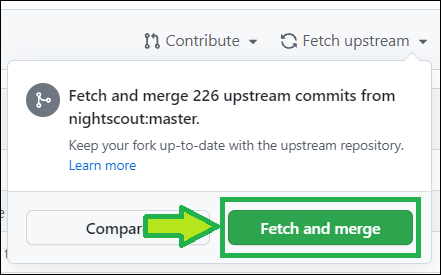
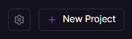
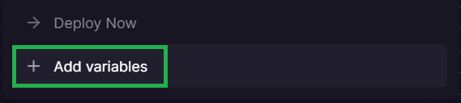
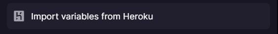
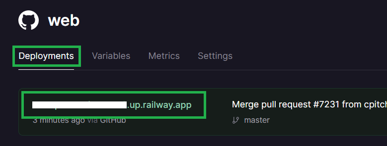

Migrate from Heroku to Railway.app⌁
APPLIES TO:  +
+  ⟹
⟹  +
+
Cost
Railway.app offers 500 free hours of execution usage per month for the Starter plan this is not enough to cover a full month. Running multiple free accounts to override this limitation is not acceptable.
You can migrate from Heroku to Railway and keep your Nightscout site for free (maintaining your MongoDB Atlas database) by subscribing to a Developer plan.
Keep in mind the free M0 MongoDB Atlas database size is limited to 512MB and you will eventually need to perform cleanup, make sure you add dbsize in enable to avoid unexpected Nightscout failure. You can increase database size with an M2 shared cluster, the additional cost is 9$ per month.
Consider Nightscout as a service as an option.
Step 1 - Update your Github repository⌁
a) Click here to log in at GitHub: https://github.com/login.
b) Enter your username or email and your password. Click Sign in

c) Select your own cgm-remote-monitor project (not nightscout/cgm-remote-monitor)

d) Your repository will open. If you see This branch is xxx commits behind nightscout:master you need to update.
If you see This branch is up to date with nightscout:master, leave the GitHub page opened and go directly to Step 2.
e) Select Fetch upstream

f) Select Fetch and merge

g) After a moment, your repository should display This branch is up to date with nightscout:master

If you ran into trouble upgrading (your branch is not up to date): delete and fork again your cgm-remote-monitor repository.
Leave the GitHub page opened.
Step 2 - Create a Railway account⌁
a) Open Railway in a new browser tab and click login. Login with GitHub.


b) Select Authorize Railway App.

c) Click on Please agree to the new terms to keep on using Railway.

d) Scroll down and click I agree with Railway's Terms of Service.

e) Scroll down and click I will not deploy any of that.

f) You now need to upgrade your account to a Developer plan. Click on the Starter Plan information and select Remove Resource Limits.
g) Enter your credit card information and select Subscribe to a Developer Plan.

Your card will be billed 1$ that will be refund immediately. Bank fees won't be refund.
Step 3 - Log into Heroku⌁
- Log in Heroku https://id.heroku.com/login

- Leave the Heroku page opened and return to the Railway page.
- If you cannot log into Heroku, follow the new user guide and reuse your existing Atlas database.
Step 4 - Deploy Nightscout in Railway⌁
a) Click on Create a New project.

If you don't see that, top right, click + New Project.

b) Select Deploy from GitHub repo.

c) Select Configure GitHub App.

d) Choose Only select repositories, in the Select repositories drop-down select your own fork of cgm-remote-monitor.
Then, at the bottom, click Install & Authorize.

e) You should be back to Deploy from GitHub repo, select it.
f) Now you can select your own GitHub repository.

g) Select Add variables.

h) The Nightscout project will deploy in the background, just ignore it: now we need to import all variables from Heroku.
When you see this, press simultaneously the keys Ctrl and K.

i) Select Import variables from Heroku.

j) Click Connect Heroku account.
k) Click Allow.
l) Redo Ctrl-K and select Import variables from Heroku. Now you can select your Nightscout app.

m) Wait until import completes.
Your site will redeploy, wait until redeploy completes.
Congratulations. You migrated from Heroku to Railway.
n) You can see your new Nightscout site name in the deployment tab of your project. Click on the name to open Nightscout.
Click on the link to open it.
Railway site name
You can change your Railway site name in order to make it easier to remember. Recommended. You will do this later, before setting your uploaders.

Step 5 - Update your uploaders and downloaders⌁
Now you will need to update all the devices connected to Nightscout with the new web address.